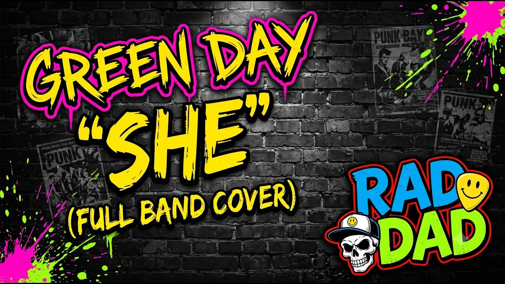

Side A Track 01
The cover band covering its own cover.
Yes, Rad Dad is a cover band. And yes, one of our favorite songs to cover came from inside the band. Honestly, that feels exactly right.

Start here
The song that became ours.
It started as a solo release. Then Rad Dad brought it into the room and turned it up.
Somewhere between the recording, the rehearsal room, and the stage, it became ours. This is the song we want people to hear first.
Live from Wildflower 2026
Then we took the songs outside.
Texas Credit Union Stage. Richardson, Texas. The part where a cover band gets to hear a festival sing the words back.
 New video
New video
 Wildflower '26
Wildflower '26

Wildflower '26 Wildflower '26
Wildflower '26
 Wildflower '26
Wildflower '26

Make some noise before the show
Help shape the night.
Browse the current running order or send Rad Dad a song idea. Every suggestion goes to the band for review—it never changes the official show automatically.
Looking for the date? The next show is September 19 at Guitars & Growlers.
You found Rad Dad
Now stay for the band.
New performances, show announcements, and whatever song gets stuck in our heads next.